red dead redemption out now in playstation®3
and xbox 360®
Across the vast Western frontier, a plague is spreading...
When former outlaw John Marston wakes up at his farmhouse, he finds a world gone insane: overnight,
deranged hordes have overrun the towns and outposts of the American frontier. In a desperate attempt
to save his family, Marston must traverse a world torn apart by chaos and disorder, using every
skill he has to survive long enough to find a cure.
The Red Dead Redemption: Undead Nightmare collection is now available on disc worldwide. Take on the
Dying and Undead West in multiplayer with exciting Co-Op missions and Competitive Modes. Attack and
defend in Stronghold mode, or take over territory in Land Grab. Play online as iconic characters
from Red Dead Revolver or as the legends from Red Dead Redemption. School your friends in Poker,
Liar’s Dice and Horse Racing and annihilate your enemies with the deadly Tomahawk and Explosive
Rifle.
By the early years of 20th century, change was coming fast to the american frontier -
and nothing brought change faster than the rapid evolution of weapons technology .
fromhand-packed muskets to repeater rifles, from single shot pistols to the iconic revolver and these
are john marston’s tools, and the weapons of red dead redemption.
just a few of the scores pf weapons you’ll be using to tame the west in red dead rredemption :
the american frontier and its promise of freedom attracted people of all kinds:
entreprenuers and outlaws, priests and prostitutes, vagabond and gentlemen.
some made a home for themselves o the land, some fouund wealth at the end of a mineshaft, and other died
penniless and friendless, or at the end of a gun.
introducing some if the unique characters you’ve likey to meet in the world of red dead redemption.
just few of the friends and foes that you, as john marston will meet across the frontier.
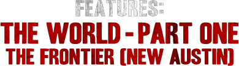
the first of the three discrete areas that comprises the game world of red dead redemption is the new
austin- the last outpost of the american frontier to be mapped, conquered and settled.
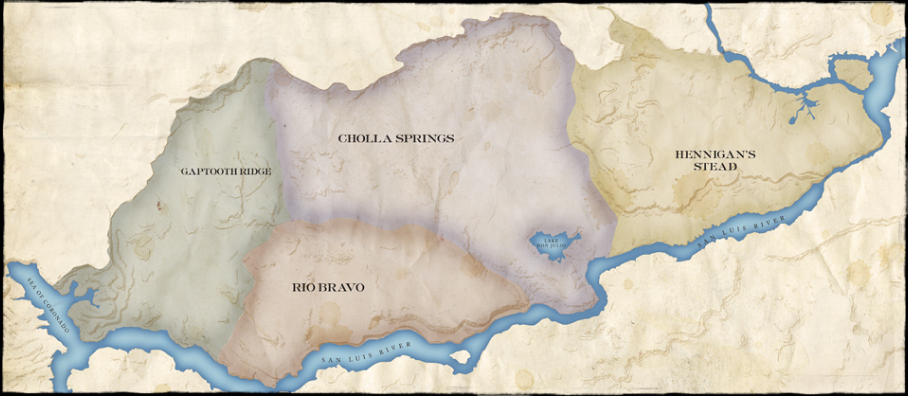
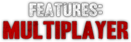
wiith a rang eof new, innovative forms of classic team-based an free-for-all games, and a revolutionary
new free roam mode that’s unlike anything ever seen before, red dead redemption raises the bar for
open-world multiplayer gaming.
Free Roam brings the open-world experience to multiplayer for up-to-16 players, with the opportunity to
form posses of up-to-8 to take on the world's gang hideouts, ambient challenges - and each other. Free
Roam also gives players a living, breathing world instead of a generic game lobby - with the freedom to
roam the open expanse, hunting or creating shootouts before heading into competitive game modes - and
leveling up with every major action. With each level come new avatars, outfits, mounts, playlists and
challenges.
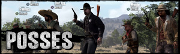
Sometimes it takes a posse to take on a gang. Form posses with friends to take on gang hideouts
and ambient challenges within Free Roam, or have your posse leader bring you into competitive
matches at any time. Posses can hear each other talk via voice chat, no matter how far apart
they may be.
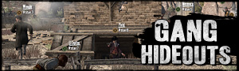
Just like in the single-player experience, some areas of the multiplayer world are overrun by
bandits. Gather up your posse or any other players in Free Roam, ride out to find the hideouts
and take those scurrilous bandits down.
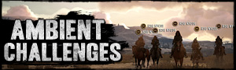
Are you a hunter, a survivalist, or a shootist? The entire multiplayer world is filled with
ambient challenges. Whether alone, with other Free Roam players or with your posse, discover
unmarked hunting areas to take down waves of deadly predators, track down rare fauna in
Survivalist Challenges, or earn yourself the title of Public Enemy by marauding towns and taking
on Law Enforcement.
Red Dead Redemption's competitive multiplayer serves up classic multiplayer match modes with a
distinctly Western twist: every match starts with players eye-to-eye in a classic showdown. Experience
team-based Gang matches, Free-For-All Shootouts and classic Capture The Bag modes in specially designed
locations within Red Dead Redemption's vast and beautifully detailed open world.
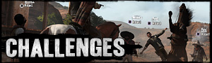
Similar to the ambient challenges in Free Roam mode, the Competitive Multiplayer modes also
offer challenges that will unlock experience points and other perks. Weapon-based challenges for
getting a certain number of kills or headshots with a specific gun will earn you the golden
version of that weapon and additional challenges will reward you with XP and a custom title for
your gunslinger.
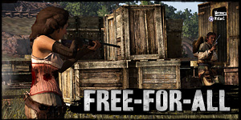
Deathmatch, Western style. It's you versus everyone else - try not to die. Keep an eye out
for
better weapons scattered across the area and use Dead Eye pickups to refill your Dead Eye
meter,
helping you take down enemies quickly
Your priority is to grab as many bags of gold as you can find, and take them to the nearest
chests - killing comes second. You can grab up to two bags of gold at once, but all that
weight
will slow you down.
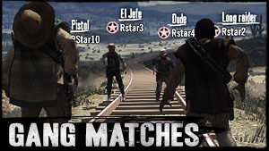
Team Deathmatch on the frontier. Work with your team to pin down enemies and rack up kill
streaks.
Team Deathmatch on the frontier. Work with your team to pin down enemies and rack up kill
streaks.
One bag, one chest, two teams. Stake your ground, and defend the chest until a bag appears.
Once it arrives, grab it and take it to your base to score.
The Outlaws to the End Co-Op Mission Pack features six all-new cooperative multiplayer missions to play
with 2-4 players. The Co-Op Mission Pack is a completely free download now available via Xbox LIVE®
(requires Xbox LIVE Gold Membership for online play) and PlayStation®Network
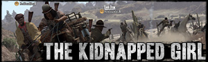
Another gang has taken over Fort Mercer, and they're holding a farmer's daughter hostage. Charge
the fort and eliminate the gang, then fend off reinforcements as you transport the girl by
stagecoach to her home at Ridgewood Farm.
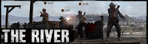
Ride a raft down river, taking out rebel encampments along the way until you reach the rebel
stronghold of Nosalida and a final epic battle for the town's massive weapons caches. Watch out
for Gatling gun-equipped enemy rafts.
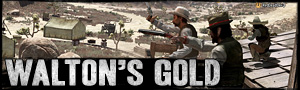
Walton's Gang have taken control of a mining camp rich with gold. Fight through the camp and
load your mine cart with as much gold as you can carry and get out as fast as you can – Walton's
boys have rigged the place to blow!
Stay tuned for information on more downloadable content that will further expand the
exciting possibilities that Red Dead Redemption multiplayer offers.